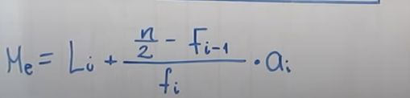
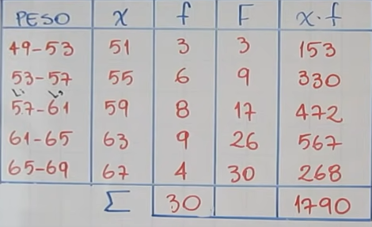
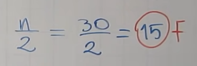
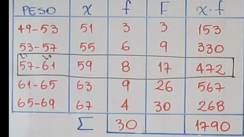
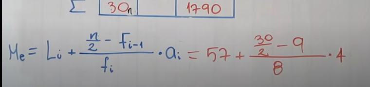
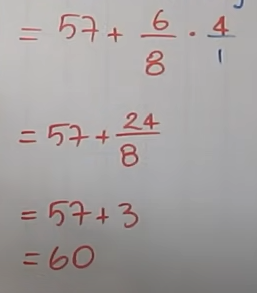

Fórmula:

Ejemplo:
Teniendoesta tabla

el numero total de los datos de la frecuencia absoluta, o sea 30, lo dividimos en 2 y se busca en la frecuencia acumulativa. En el caso de que llegaramos a encontrarlo (aunque casi nunca), la mediana va a ser igual a el limite superior.

Como el 15 no lo encontramos en la tabla, buscamos el siguiente, o sea el 17.

En la fórmula, el Fi-1 significa anterior, en este caso el anterior sería el 9.
Si fuera Fi+1, seria el de despues.
La a en la formula es el : Limite superior(Ls) - Limite inferior(Li); en este caso:
a = 4.
Completamos la fórmula. Asi queda:

Resolvemos y asi queda:

Nos da como resultado 60.
Para saber sivamos bien, com resultado tiene que dar un numero entre el Limite superior e inferior.